Why it broke
It wasn't just a screen problem. It was a system problem.
- Fragmented systems and tools across teams
- Sequential verification: Every step waited on the last
- Heavy dependency on internal handoffs and email communications
A redesign of Bolt's merchant onboarding system: turning a months-long manual bottleneck into a self-serve flow that takes minutes.
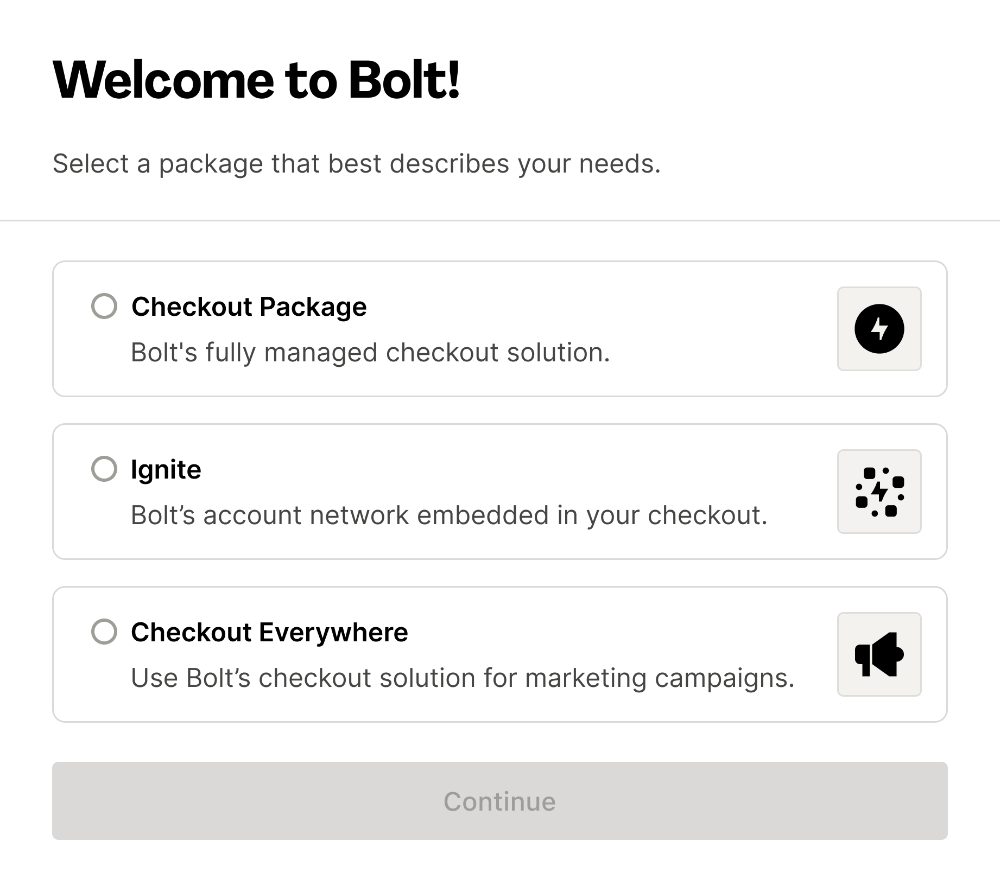

Merchants would sign a contract then wait weeks, sometimes months, before they could actually install Bolt. Internally, every step required manual work from Sales, Operations, and Implementation Managers.
Going live took longer than most product launches.
Merchants would enter information that our internal teams would then re-enter somewhere else.
The onboarding form asked for information that either an engineer or the CEO would know - all in one form.
Open opportunities sat untouched while merchants waited.
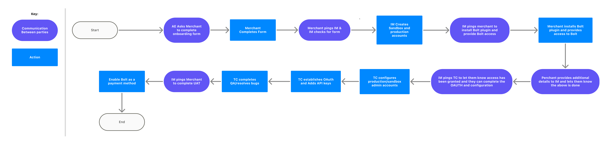
The legacy flow: long forms, manual handoffs, poor accessibility and screens that asked for the same thing twice.
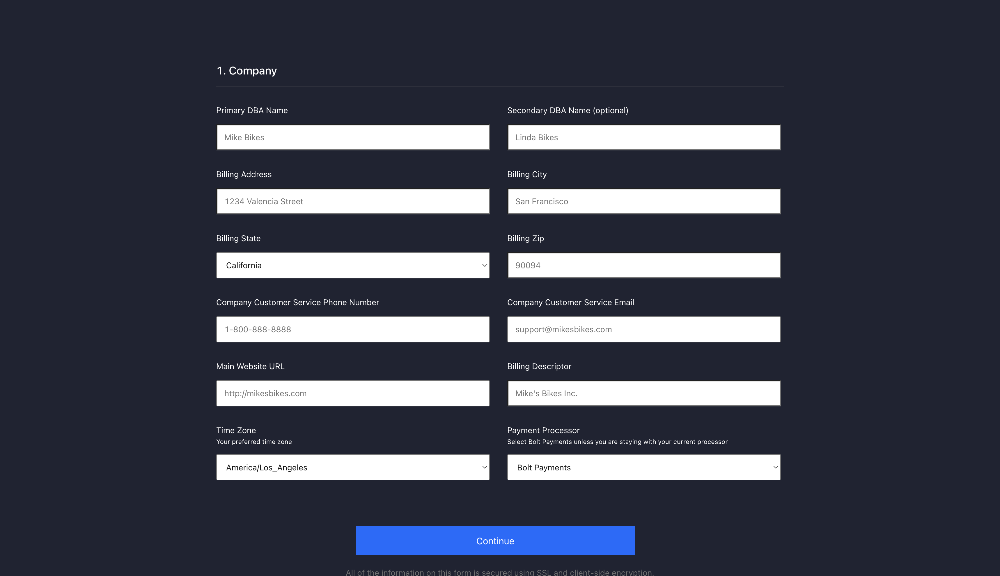
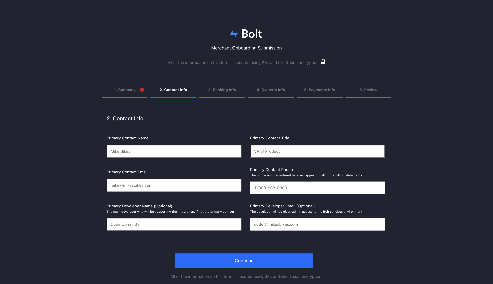
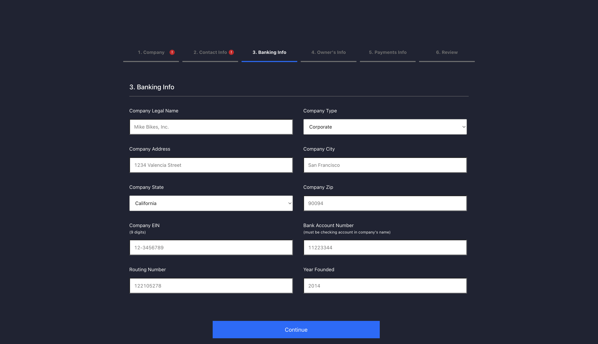
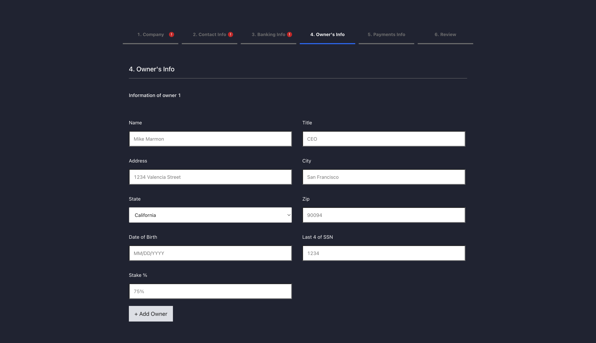
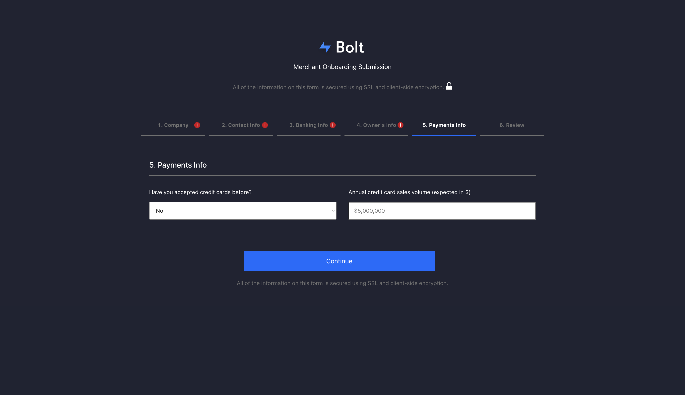
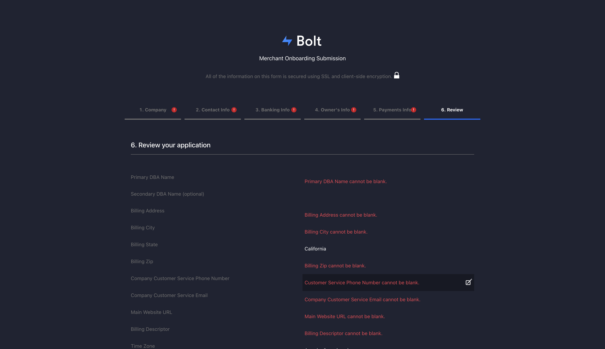
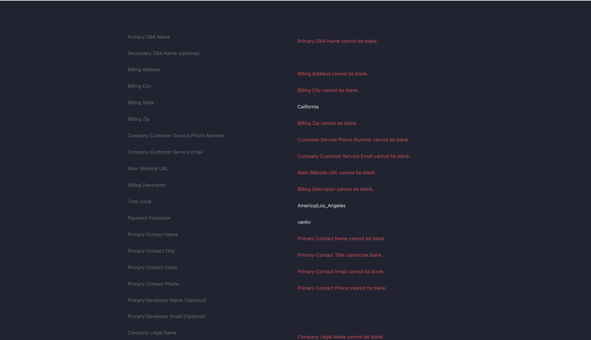
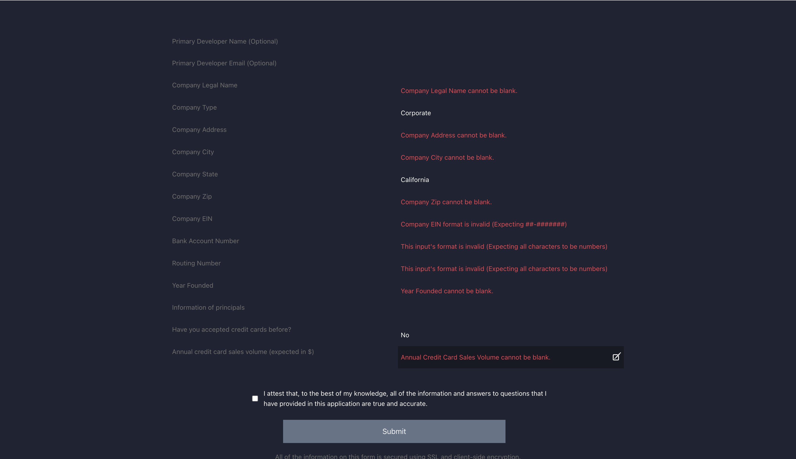
I led the end-to-end onboarding experience as Lead Product Designer — partnering with teams across the company.
Replace human data entry with automation wherever risk and compliance allow.
Bifurcate technical implementation and setup with other parts of the account setup (i.e. Payments)
Hand control to the merchant. Internal teams move from gatekeepers to support.
I started by documenting the ideal flow: highlighting edge cases, different points of entry, all the different users and surfaces they might touch to create a holistic view of what was happening.

Optimizing the onboarding flow rippled into adjacent systems. One flow quickly became 3, and getting it right meant cross-team collaboration and prioritization tradeoffs.
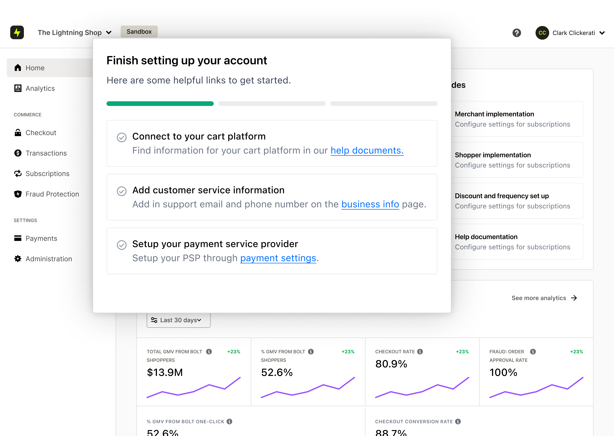
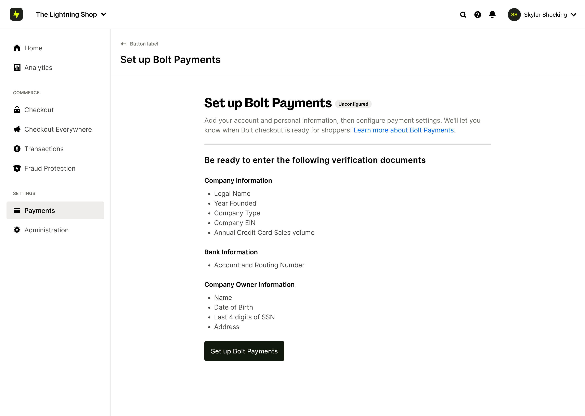
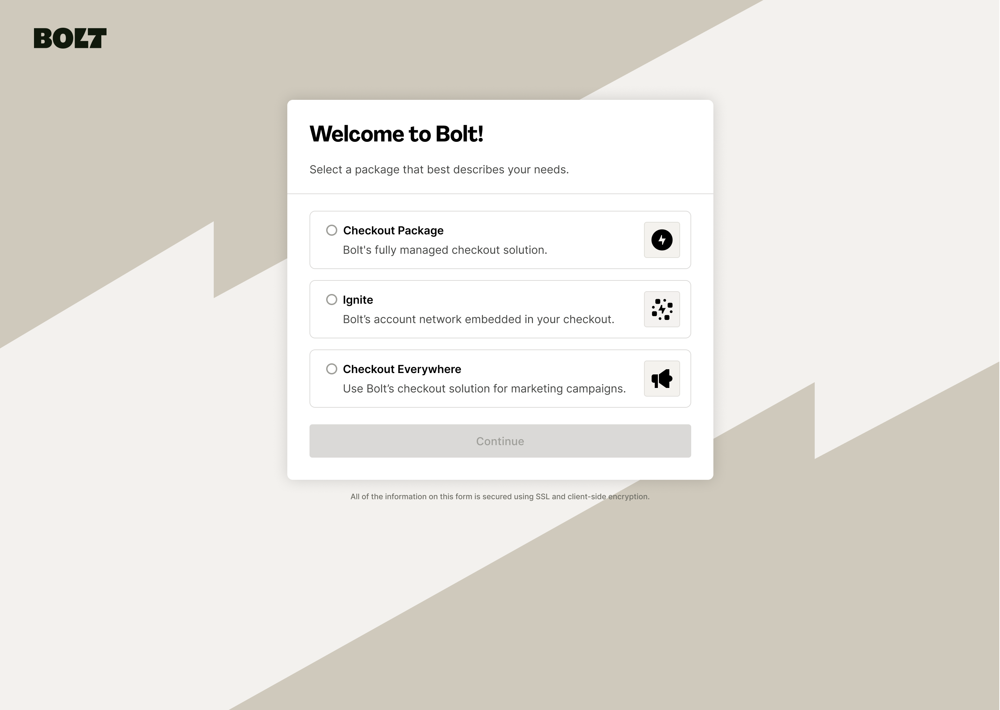
Deferring data collection changed the first-time experience for merchants when they log into their dashboard. New in-product guidance was to be designed in lockstep with the new flow. This was something that could easily scale to be used for tasks required for other products.
Pulling payment data out of onboarding meant it had to go somewhere else. So we added it to — you guessed it - the Payments own setup flow!
This was not included in the originial spec or desigg but the flow was able to easily accommodate a growing set of product integrations and installation paths — built to flex across Checkout, Ignite, Checkout Everywhere, and more.
The account creation process shrank from a multi-month ordeal to a self-serve flow merchants could finish in a sitting.
Audited every required field and cut what wasn't essential to first activation. Included others where it made the most sense.
Potential GMV unlocked by removing months from merchant go-live time (based on open opportunities for Adobe Commerce alone).
The bigger shift was operational. Three different audiences felt the change in three different ways.
This first launch is one of six epics defined to incrementally automate the merchant's path from contract to live. Professional Services stays as the main point of contact while the product chips away at the manual work beneath them.